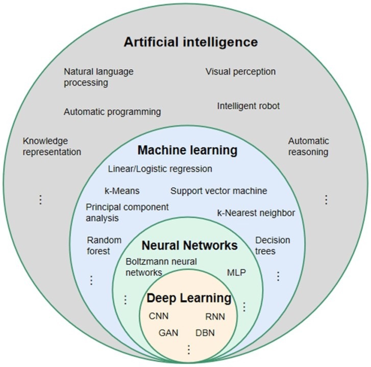
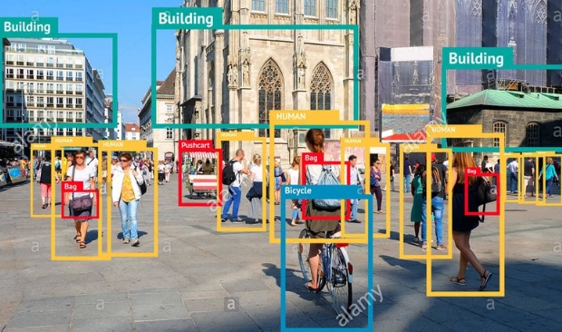
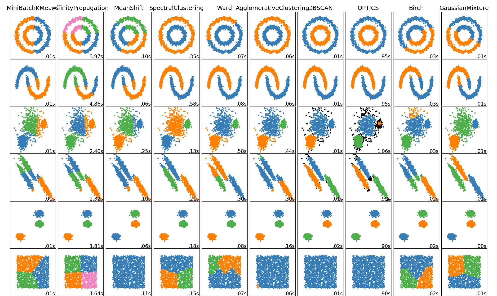
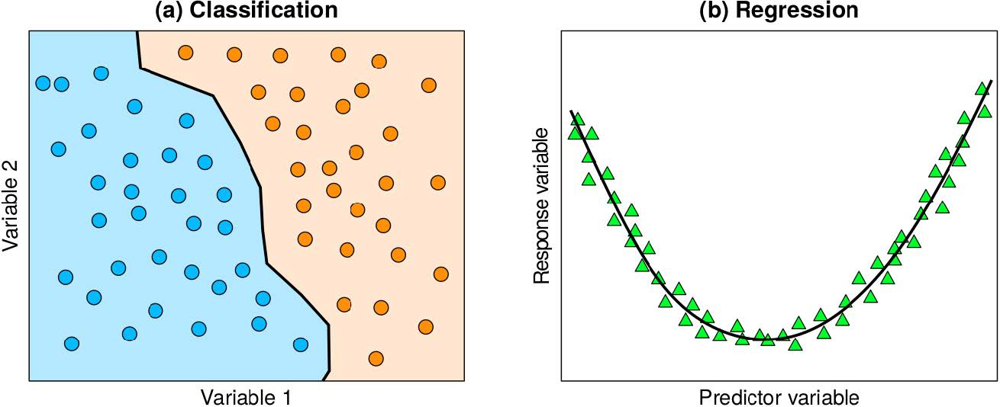
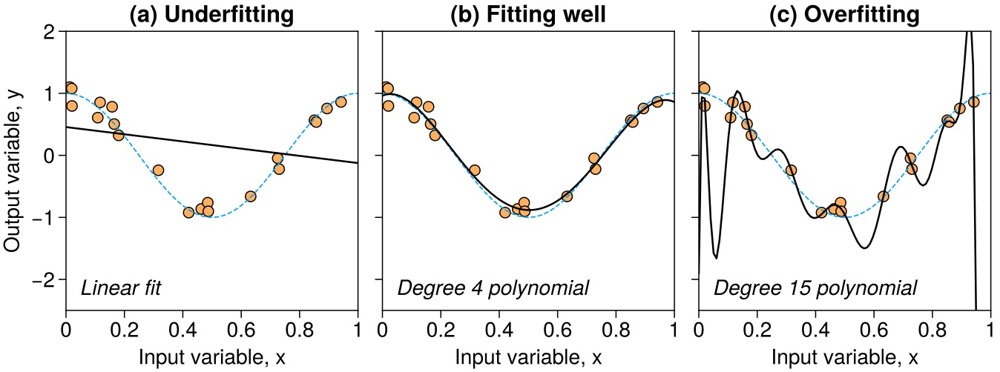
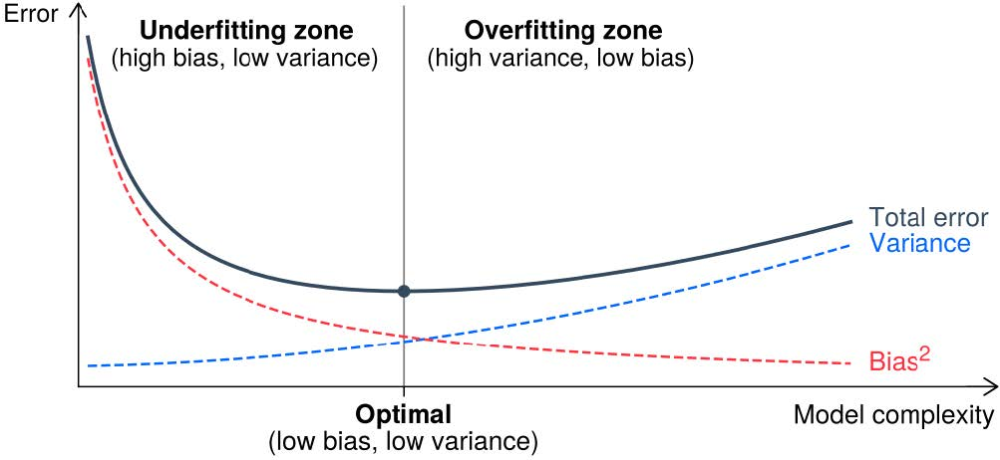
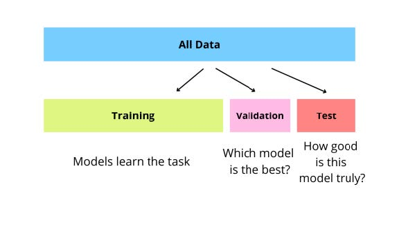
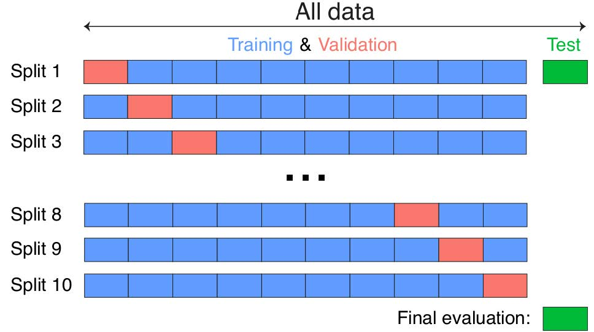
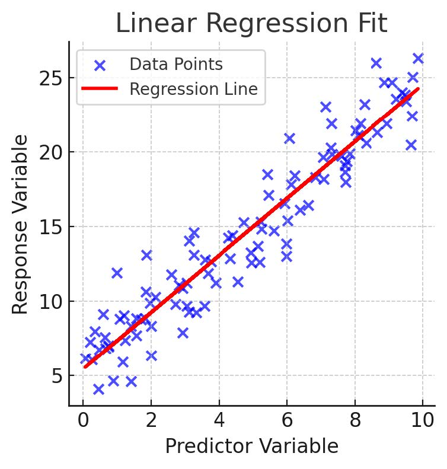
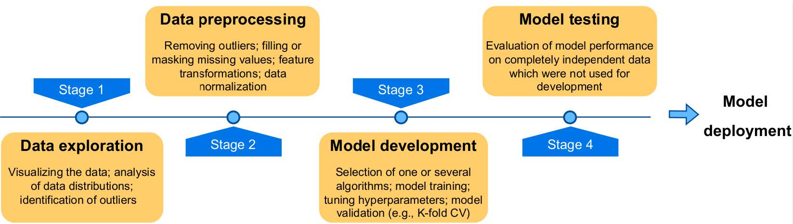

15 Neuronale Netze

- Künstliche Intelligenz: jede Technik, die menschliches Verhalten oder menschliche Entscheidungsfindung nachahmt
- Machine Learning: ein Teilbereich der KI. Verwendet statistische Methoden, um aus Daten zu lernen.
- Neuronale Netze: sind das Herzstück der aktuellen KI-Revolution
- Deep Learning: ein Teilbereich des maschinellen Lernens, der komplexe NNArchitekturen (CNNs, RNNs, …) umfasst
15.1 Grundlegende Konzepte
15.1.1 Überwachtes vs Unüberwachtes Lernen


- Überwachtes Lernen:
- Lernen aus Beispielen
- Bspw. Bildklassifikation:
- Trainingsdaten: Bilder mit zugehöriger Klassifizierung
- Ziel: ein Netzwerk entwickeln, das neue, nicht geklassifizierte Bilder korrekt klassifiziert
- Unüberwachtes Lernen:
- Lernen aus Beispielen
- Bspw. Clusteranalyse:
15.1.2 Klassifikation und Regression

- Klassifikation:
- Klassifikation von Daten in verschiedene diskrete Kategorien
- Bspw. Bildklassifikation:
- Trainingsdaten: Bilder mit zugehöriger Klassifizierung
- Ziel: ein Netzwerk entwickeln, das neue, nicht geklassifizierte Bilder korrekt klassifiziert
- Regression:
- Regression von Daten in einem kontinuierlichen Bereich
- Bspw. Preisvorhersage:
- Trainingsdaten: Preise und Eigenschaften von Häusern
- Ziel: ein Netzwerk entwickeln, das neue, nicht geklassifizierte Häuser korrekt preiset
15.1.3 Was ist ein Modell?
Input
\[ X= {x_{i,j}} \in \mathbb{R}^{n \times m} \]
Mapping \(f\)
- Idealistisch:
\[ y = f(X) \]
- Realistisch:
\[ y = f(X) + \epsilon \]
Output
\[ \begin{cases} y = \{y_i\} \in \mathbb{R}^n \quad \text{Regression} \\ y = \{y_i\} \in \{0, 1\}^n \quad \text{Klassifikation} \end{cases} \]
15.1.4 Wie finden wir ein passendes Modell?
\[ h_\theta (X) \]
- \(\theta\) sind die Parameter des Modells, gelernt aus \(X\)
Modellvorhersage:
\[ \hat{y} = h_\theta (X) \]
- \(\hat{y}\) ist die Vorhersage des Modells. Wir hoffen: \(\hat{y} \approx y\)
Wir versuchen den Unterschied zwischen \(\hat{y}\) und \(y\) zu minimieren. Wir nennen diese Funktion die Cost Function \(J(\widehat{y}, y)\)
\[ J(\widehat{y}, y) = \min_{\theta} \frac{1}{n} \sum_{i=1}^n (y_i - \hat{y}_i)^2 \]
Typischerweise können wir hier MSE (Kapitel 11.3) und MAE (Kapitel 11.2) verwenden.
In der Realität haben wir aber fast immer noch einen Fehler \(\epsilon\):
\[ y = f(X) + \epsilon \]
3 Szenarien:
- \(\widehat{y} \equiv y\), das Modell lernt die Datenfehler \(\epsilon\) perfekt
- \(\widehat{y} \neq y\), das Modell ist weit entfernt von den Daten
- \(\widehat{y} \approx y\), das Modell stimmt gut mit den Daten überein

Modelle können zu einfach (a), passend (b) oder zu komplex (c) sein. Um das abzuwägen, machen wir einen Bias-Variance Tradeoff.

15.1.5 Modellqualität


15.2 Iteratives Training

- \(\hat{y}=h_\theta(x)=w x+b\)
- Modell Parameter: \(\theta=\{w, b\}=\left\{\theta_0, \theta_1\right\}\)
- Kostenfunktion: \(J (h_\theta )=\frac{1}{2 n} \sum_{i=1}^n\left(y_i-\widehat{y}_i\right)^2\)
Wir müssen \(\theta\) finden, so dass \(J\left(h_\theta\right) \rightarrow \min\)
- Kleinste Quadrate
- Optimierung der Kostenfunktion mittels Gradientenabstieg
15.3 Ablauf von Machine Learning Projekten
